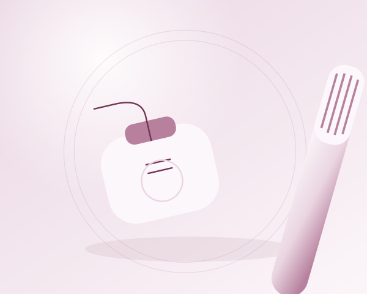

Prevenir é cuidar: a importância da saúde bucal no dia a dia
O cuidado com a boca acontece muito antes de surgir uma dor. Ele se constrói em gestos cotidianos que ajudam a proteger os dentes e as gengivas e tornam a alimentação e a convivência mais confortáveis. Escovar, usar fio dental e observar mudanças são partes de uma mesma rotina de prevenção.

A escovação precisa de atenção, não de força
A placa bacteriana é uma película que se forma sobre os dentes. Quando não é removida adequadamente, pode favorecer a cárie e a inflamação gengival. A escovação ajuda a desorganizar essa película, mas precisa alcançar todas as faces dos dentes, inclusive as superfícies próximas à gengiva.
O Ministério da Saúde orienta escovar os dentes diariamente após as refeições e antes de dormir. Use uma escova de tamanho adequado, com cerdas macias, e faça movimentos cuidadosos. Mais força não significa mais limpeza. A língua também pode ser higienizada suavemente, da parte interna em direção à ponta, sem provocar desconforto.
Por que escolher creme dental com flúor?
O flúor é um aliado na proteção contra a cárie. Por isso, o creme dental fluoretado faz parte das recomendações de higiene bucal do Ministério da Saúde. Ao escolher o produto, confira a indicação de flúor na embalagem e peça orientação ao dentista quando houver dúvidas sobre a quantidade ou a forma de uso.
O creme dental complementa a ação da escova; ele não substitui a limpeza cuidadosa. Para crianças, a quantidade deve ser pequena, adequada à idade e supervisionada por um adulto.
O espaço entre os dentes também importa
A escova não alcança bem todos os espaços entre os dentes. O fio dental complementa a higiene nessas áreas, removendo resíduos e placa. Passe-o com delicadeza, acompanhando a lateral de cada dente, sem pressioná-lo bruscamente contra a gengiva.
Se houver dificuldade para usar o fio, peça uma demonstração ao profissional. Sangramento recorrente merece avaliação; deixar de limpar a região sem entender a causa não resolve o problema.
Alimentação e acompanhamento caminham juntos
As bactérias envolvidas na cárie utilizam açúcares dos alimentos para produzir ácidos que desgastam os dentes. Uma alimentação saudável, com atenção ao consumo de produtos açucarados, participa da prevenção. Não é preciso transformar cada refeição em preocupação: o objetivo é construir uma rotina possível e consistente.
As avaliações odontológicas ajudam a reconhecer necessidades que nem sempre causam dor no início. O intervalo entre consultas deve considerar a situação de cada pessoa, e não um prazo único para todos. Conte ao dentista sobre mudanças, desconfortos e dificuldades na higiene.
Uma rotina que cabe na vida real
- Reserve tempo para escovar todas as regiões da boca, especialmente antes de dormir.
- Use creme dental com flúor e complete a limpeza com fio dental.
- Observe alterações nos dentes, nas gengivas e nos demais tecidos da boca.
- Combine com o profissional um acompanhamento adequado às suas necessidades.
Prevenir não exige uma rotina perfeita. Exige continuidade, informação e espaço para tirar dúvidas. Pequenos cuidados repetidos com atenção ajudam a preservar a saúde bucal ao longo da vida.
Fontes consultadas
Conteúdo original de caráter educativo, elaborado com base nas orientações acima. Não substitui uma avaliação individual.